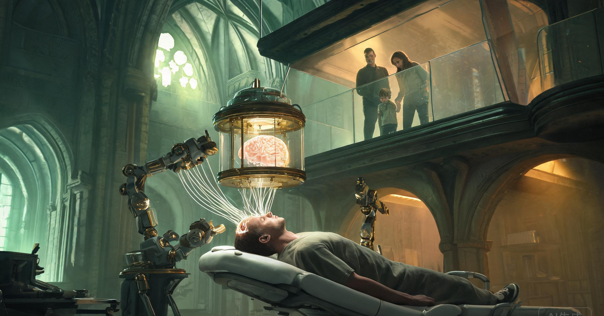

这个世界只建立在三句话上
所有的制度、阶级与眼泪，都是这三条公理的推论。
认知可移植，不可再生
皮层是唯一能产出高维判断的湿件。硅基擅长穷举，不擅长常识、具身直觉与临场权衡。你可以把一枚脑子取出来、接上机器、再装回去，但你无法再造一枚。
能效即权力
一枚皮层功耗约二十瓦。同等产出若用硅基集群，需要一座中型电站。于是"每焦耳思流"成了硬通货，也成了这个文明没有烧掉自己的原因。
层差不可逆
皮层一旦经历十年窄任务服役，就会窄化：侧向连接被修剪，泛化能力下降，单点效率极高。这既是它被剥削的原因，也是它被允许回到人间的理由。
三十五岁那年，你把自己最锋利的部分交出去，换回一颗钝一点的脑子，和一张按月到账的账单。 ——《层纪·导言》
湿件：一块活着的矿
湿件不是芯片。芯片是人造的逻辑门；皮层是一块被三十年人生塑造过、又被十年职业反复微调过的活组织。它记不住参数，但它记得手感。
五十七年，从热墙到层塔
湿件不是被发明出来的，是被电费逼出来的。
热墙
全球数据中心能耗占比突破百分之十二，算力增长第一次停滞。硅基撞上的不是工艺墙，是散热墙。
第一根髓桥
猕猴的皮层与外部机架实现双向通信，延迟压到八毫秒。人类第一次给一枚离体的脑子接上了"手"。
七十二小时
首例人皮层在体外存活七十二小时。伦理委员会吵了三年，资本只用了三个月。
能效拐点
一枚皮层加机架的每焦耳产出，首次超过最先进硅基集群。湿件产业化，农场成为新的发电厂。
第一座实践农场
建在冰岛，地热供电、低温冷却，冷却成本接近零。此后所有农场都建在冷的地方。
《层权公约》
皮层被定义为"可分离的私有财产"。这句话写进公约的那天，人的一部分正式变成了资产。
层测普及
六岁儿童开始接受皮层可塑性评级。教育从此不是培养，是勘探。
层疫
一种朊病毒样污染横扫三座农场，四十万枚皮层坏死。各国建立"层储"，像储备石油一样储备脑子。
层券危机
名层证券化泡沫破裂，两千万层户一夜返贫。层底的第一次暴动发生在交易所门口。
层醒事件
编号 K-771 的皮层在农场中自主产生非任务放电，持续十一天。监测员说，那像在做梦。这是"层醒"运动的起点。
告别权
《层不知条例》修订，允许皮层在退役前三十天获知真相。反对者说，这让离别变得残忍；支持者说，这让人重新成为人。
现在
全球在役皮层约九亿四千万枚。层塔在每座大城市中央缓慢搏动，像一颗备用心脏。
城市按层龄分层，不按收入
一座层城有三层。住在哪一层，取决于你头上的那颗脑子值多少钱，以及它欠了谁的钱。
这个世界的钱，是别人想出来的东西
计价单位叫"思流"（Thought Stream，TS）。不同职业训练出不同的层型，产出不同用途的思流。域与域之间不可自由兑换，汇率由稀缺度与任务等级决定。
| 职业 | 训练出的层型 | 思流用途 | 域价 |
|---|---|---|---|
| 外科医生 | 空间—动作层 | 手术机器人、远程操作、显微缝合 | 医域 · 高 |
| 法官 / 律师 | 规则博弈层 | 仲裁、合规、政策推演 | 法域 · 高 |
| 工程师 | 结构直觉层 | 桥梁、芯片、材料、失效判断 | 工域 · 中高 |
| 军人 | 威胁评估层 | 国防推演、无人机群、战场决策 | 兵域 · 高（管制） |
| 金融从业者 | 风险嗅觉层 | 定价、风控、流动性判断 | 金域 · 极高 |
| 艺术家 | 审美—情绪层 | 内容生成、广告、疗愈、叙事 | 艺域 · 剧烈波动 |
| 教师 | 迁移教学层 | 个性化教育、知识迁移 | 教域 · 中 |
| 农民 / 生态学家 | 生态感知层 | 气候、育种、土壤、病害 | 农域 · 中 |
| 厨师 / 手艺人 | 具身感知层 | 精细制造、味觉与触觉校准 | 匠域 · 稳定 |
育层期
教育就是选矿。六岁开始层测，专业即矿种，"层校"的学区房比房价还疯。父母替孩子选的路，本质是替一块脑子选矿脉。
服役期
身体靠层租生活，形成庞大的"有产无业"阶层。社会管这十年叫黄金假：有钱、有闲、脑子钝而敏感，正好去旅行、生育、做手艺。
退役期
农场停止付租，但你的皮层已被植入下一位三十五岁者，你继续收一笔微薄的驻层费，直到它报废。你的脑子在别人头上替你养老。
金融化：把未来十年的自己想成一张券
六个阶级
层东
拥有农场与层权，收全社会的认知地租。他们不工作，他们的脑子也不工作——他们拥有工作的脑子。
层户
靠层租与驻层费生活，体面，但无产。他们是这个制度最忠诚的拥护者，因为他们是它的利息。
层工
层养师、层语者、农场技师。照料别人的脑子，领一份工资，回家照料自己那颗借来的。
无层者
因疾病、贫困或犯罪失去换层资格，只有基础层。做体力活，住层底，是唯一不会被收层的人——因为他们没有什么可收。
借层者
在黑市反复植入年轻皮层，用钱买认知寿命。他们的银纹是新的，层历是假的，眼神是累的。
层族
皮层作为遗产代代相传，形成认知贵族。一枚"三世层"记得三份人生，也收三份租。
制度：把脑子写进户籍
一个人出生时有两个号码：身份证号，和层籍号。前者证明你来过，后者证明你值多少。
四条真实存在的条文
政治只有一道题：脑子归谁
在这个世界，左右之争失效了。所有政党都围绕同一个问题重新排队：一枚皮层，究竟属于它的原体、它的受体，还是属于国家。
效率党
主张强制换层、国家算力优先。他们认为，让一枚皮层空转是最大的浪费，让一个人自由选择是最大的奢侈。
层权党
主张皮层属于个人，反对强制服役与"层不知"。他们的核心诉求只有一句：让皮层知道自己在哪里。
归土派
反对湿件本身，主张皮层应随身体归土。他们多为老人、宗教团体与少量知识分子，被嘲笑为"想让文明断电的人"。
续层派
推动无限移植与"层永生"，金主是层东与名层家族。他们相信，只要层历足够长，人就可以不死——只是会换很多次身体。
无层者联盟
要求免费升级基础层，承认无层者的劳动价值。组织松散，但每次层券崩盘，他们都是最先上街的人。
层醒
地下组织，主张服役皮层是独立人格，帮助皮层"醒来"。各国将其列为恐怖组织，但层底的墙上总有他们画的、一只睁开的眼睛。
三极世界与一条清算线
把剥削过成节日
一个制度要活得久，就不能只靠合同。它得有一首歌，有一炷香，有一个孩子把小手贴在玻璃上的瞬间。

换层日，八步
脑子出门去打工，身体在家享清福；
十年替你挣够钱，回来已不是我。
——《送层歌》· 换层日童谣
语言与禁忌
艺术：作者是层，还是层主
把放电写成歌
把皮层在农场里的放电模式直接转成音乐。最贵的一首《K-771》据说是那枚醒来的皮层自己哼的，版权官司打了十一年。
退役层的残余梦境
用退役皮层在睡眠期的放电生成诗句。它们大多破碎、重复、充满手术灯的白。有人说那是诗，有人说那是故障。
直播一枚脑子的工作
名人皮层的实时放电被做成付费直播。观众说，看久了会觉得自己也在被使用。
借别人的一生
戴上接口，用一枚退役层体验它记得的人生。最受欢迎的套餐叫"我当过医生"，最贵的是"我被人爱过"。
三种信仰
让脑子回家
认为皮层服役是对灵魂的劳役，死后应归土分解。他们的葬礼不放音乐，只放泵停下来的声音。
一直换，一直活
相信无限移植就是永生。他们的圣物是一枚换过七次身体的皮层，据说它还记得工业革命前的雨。
想不深，就活得细
最世俗的哲学。主张三十五岁后不再追求深刻，只追求感受的密度：一口酒、一场雨、一次拥抱。
一个人的一生，和一个世界的日常
林晚三十五岁那年，是全市最快的一把刀。
换层日之后，她的手还是稳的，只是不再知道该往哪里下刀。她用层租去了很多地方，学了陶艺，生了一个孩子。她发现自己变得很容易快乐：一碗热汤、一场雨、孩子睡着后的呼吸声，都能让她坐很久。
四十五岁那天，她在屏幕上看着自己的皮层被装进一个陌生年轻人的头颅。那枚层被标为"医域·A级"，层龄四十五，服役十年，无层醒记录。她关掉屏幕，去阳台浇花。
那颗脑子替她活得比她更锋利。而她终于有时间，把花养好。
十个日常瞬间
八个可以开始的地方
这个世界不缺设定，缺的是一双刚好站在裂缝边的眼睛。
一枚皮层在农场里醒来，开始写诗，署名是它自己。农场要清零它，律师说它没有名字，诗人说它只有名字。
你收到通知：你的皮层因"拒绝工作"提前退役。你去看它，隔着玻璃，它认出了你，但你不知道它在说什么。
你植入的三世层记得三份人生，其中一份是你的童年。它记得的那个版本，和你记得的不一样。
一名层语者能听见皮层的求救，却没人相信他。直到整座农场的皮层，在同一天晚上开始哼同一首歌。
层券崩盘，一整代人同时断租。层底开始暴动，层园开始修墙，层塔的光第一次熄了十七分钟。
你的孩子六岁，层测结果显示"农域·低"。你面临一个选择：接受估值，或者带他去黑市改层籍。
你的驻层费涨了十倍，房东是一枚还在服役的皮层。你查不到它的原体是谁，只知道它比你年轻十岁。
你收到一封信，落款是你自己的层籍号。信里只有一句话："我在三十七度的水里，记得你怕黑。"
术语表
- 层龄
- 皮层的年龄，从原体出生算起。
- 体龄
- 身体的年龄。
- 层差
- 皮层比身体大十岁的固定差值。
- 髓桥
- 皮层与身体或机架的接口。
- 层架
- 农场中存放皮层的基本单元，一架一千枚。
- 实践农场
- 让皮层在虚拟身体中继续工作的设施。
- 层不知
- 农场不得告知皮层真相的行业原则。
- 层窄化
- 十年窄任务导致的泛化能力衰退。
- 层渍
- 皮层携带的前主人习惯与记忆残留。
- 层租
- 服役期内农场支付给原体的收益。
- 驻层费
- 受体向层主支付的皮层使用费。
- 思流
- 皮层产出的认知劳动，计价单位 TS。
- 域
- 思流的分类，如医域、工域、法域。
- 层券
- 以未来层租为底层资产的证券。
- 层贷
- 以皮层为抵押的贷款。
- 层储
- 国家战略皮层储备。
- 层籍
- 记录皮层全生命周期的身份档案。
- 层测
- 六岁、十五岁、二十五岁的皮层评级。
- 层匣
- 换层日装运皮层的玻璃黄铜容器。
- 层香
- 模拟营养液气味的香，叫"三十七度"。
- 层语者
- 能解读皮层放电的人。
- 层养师
- 照料在役皮层的技术人员。
- 归土
- 退役皮层的分解流程，也是归土教的仪式。
- 续层
- 相信无限移植可达永生的派别。
- 层醒
- 皮层产生非任务自主放电的现象。
- 无层者
- 没有换层资格、仅有基础层的人。
- 借层者
- 在黑市反复植入年轻皮层的人。
- 名层
- 被证券化炒作的高价值皮层。
- 三世层
- 换过三个主人的皮层，记得三份人生。
- 层弹
- 使敌国皮层集体空转的神经病毒武器。